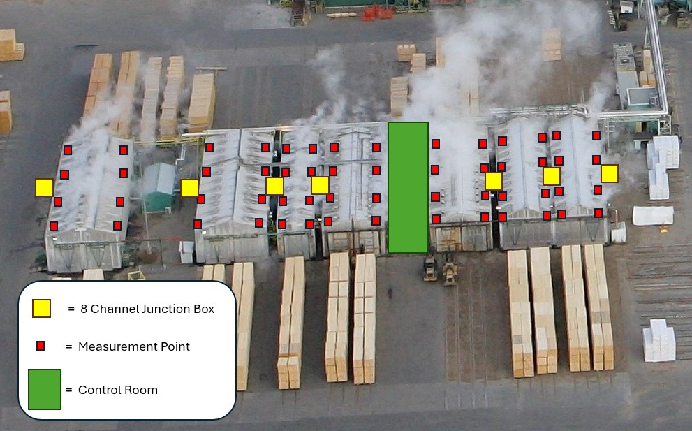
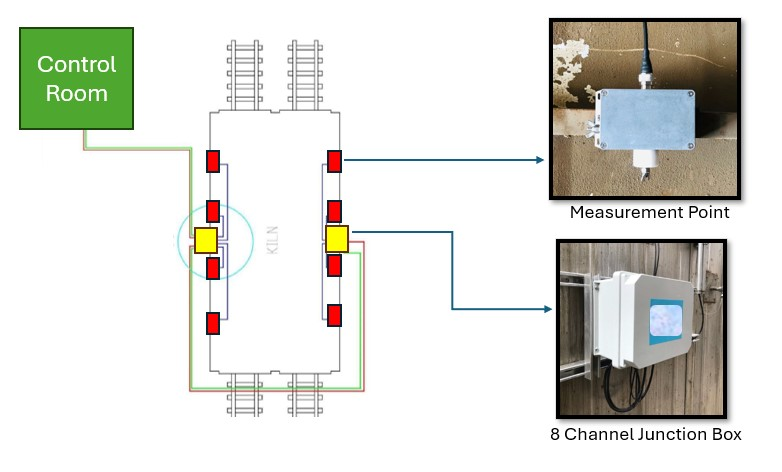
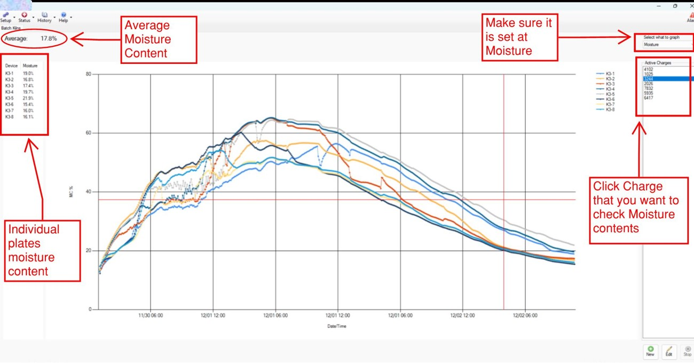

KILN MOISTURE PLATE SYSTEM
Purpose
The Kiln Moisture Plates System monitors the moisture level of lumber packages inside high temperature drying kiln. Instead of stopping the operation to manually check the moisture, the system continuously monitors the moisture and halts when the target level is reached
Concept Drawing
  
Completed tasks by Dayel Kim
1. Managed and led the project, including proposal, quote, budget and installation
2. Purchased equipment and parts from the OEM
3. Supervised and managed an electrical contractor to install the system according to the manufacturer's guidelines
4. Conducted start-up and commissioning, integrating the system with the existing Modicon PLC and setting up communication via OPC